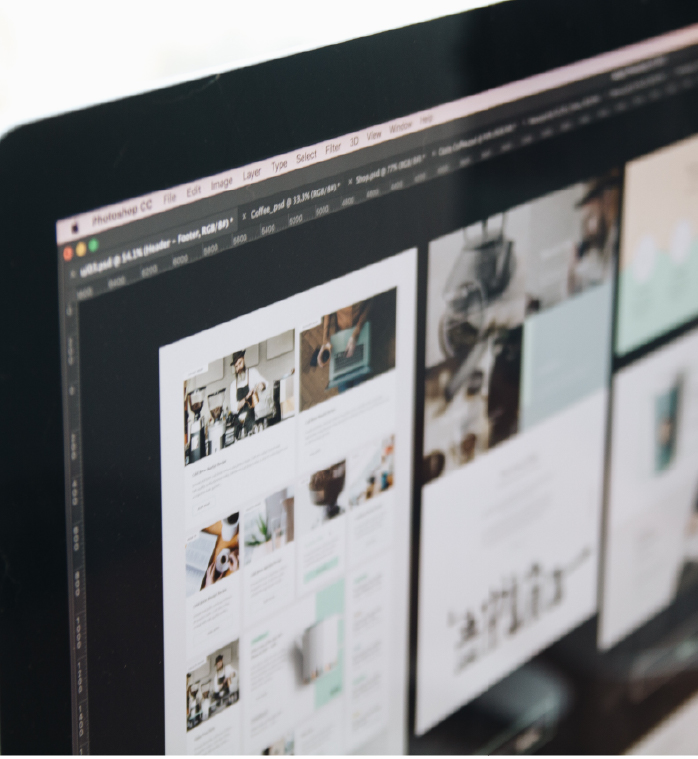
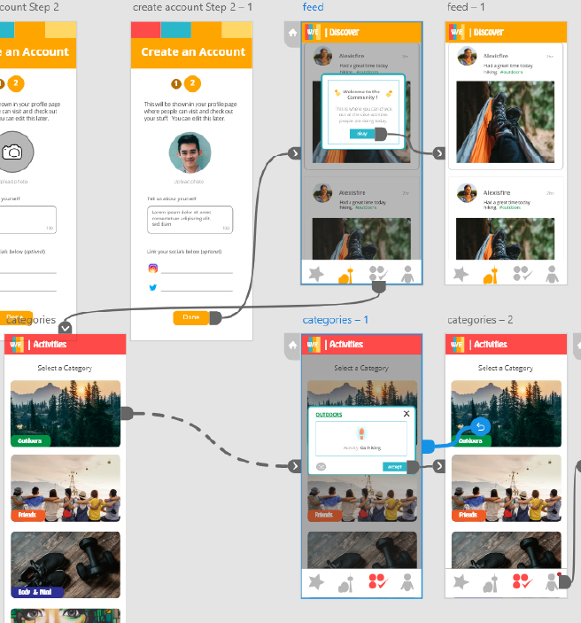

We Explore is a project that my partner, Daniel Babin {EMBED LINK}, and I worked on as our capstone project from January 2020 - April 2020. Through stressful brainstorm sessions on potential capstone ideas and a few beers later, we came up with an amazing idea. Our idea was to create an app that generates fun and engaging activities for users to complete either individually, or with friends. Once we knew what we were doing, we got caffeinated and started planning.
Roles
With our strong suits in mind, I was appointed lead designer and Babin was lead developer (Of course I also helped with development).
Getting Started
With our strict timeline in mind, we split the process of building and designing into weeks to keep us on track.
Week 1-2
• Conducting user research
• Constructing wireframes
Week 2-4
• Creating mockups
Week 4-6
• Creating the prototype
• Conducting user tests
Week 6-13
• Our coding journey
Week 14
• The result
Throughout the Weeks
Week 1-2
Conducting User Research
Once creating a solid Idea we thought about whether it was needed in the market. So we thought to ask our target audience, young adults, a few questions. The questions we asked helped us indicate the type of people these students currently are at this stage of life. It revealed their personality and aspirations in life. From their answers we built a user persona, to guide us through our design stage.
User Research Q & A Samples
When having a night out with friends, What do you guys typically do? Is it always the same thing?
honestly we just go for some type of food or outing/activity and then try to include some drinks into it haha unless it's a cozy thing then we all just take it easy and relax around each other.
How would you describe yourself as a person?
I feel like i'm a very optimistic person who likes to look at the big picture. I'm a big dreamer and have very idealistic goals. If i want something then most times I feel like I can get it if I try hard enough. I'm also very receptive to other people's emotions and see myself as a neutral personality rather than dominant or submissive.
What do you like to do in your spare time? What are your hobbies?
I like to go to the gym, organize my tasks for the week, try to look for new things to do around the city but I don't feel I have any specific hobbies.
Constructing Wireframes
Here are some hand drawn wireframes we created for mobile and tablet. These wireframes were brought to every group meeting as they came in handy when creating basic layouts during the development stage as well for the design process. These drawings map out all the pages we were thinking about adding along with features we wanted to include.
Week 2-4
Creating Mockups
For our mockups we used Adobe Illustrator and used our wireframes to build our pages and layouts. From there we discussed what our branding would be like; deciding on what sort of colors and fonts we were going to implement. Using our user persona we searched for fonts and colors that matched the energy as our user which resembled a fun and exciting vibe filled with togetherness. Pulling inspiration from the ongoing trend of bringing back the 80s we thought sliding in bits of it would fit the theme perfectly.
Design Decisions
To give off the fun 80 theme vibes we went with a vibrant color scheme that matches the colors used in the great decade. The main 4 colors were used to differentiate the sections in our app. To tie it all together we chose Hobo-Std to be used in our wordmark logo as well as some of our main headings/ titles throughout the app to remain consistent. As for Open Sans, it was chosen as our body text as it is clear and easy to read.
#FE4A49
#2AB7CA
#FFA500
#FED766
-80.jpg)
Week 4-6
Creating the Prototype
In this stage, using the interface we designed in Adobe Illustrator, we created a prototype in Adobe XD that demonstrates the main functionalities of the app. In our prototype we demonstrated the process of:
- A user creating an account
- Navigating through different pages
- Selecting an activity
- The process of completing an activity
With our finished prototype we began to show potential users to discover possible user pain points, some problems that may arise as they journey through our app. Due to time constraints we only tested 3 individuals. We tested our users one by one. We assigned our users to complete the following goals:
1
Create an account
2
Select an activity
3
Complete that activity